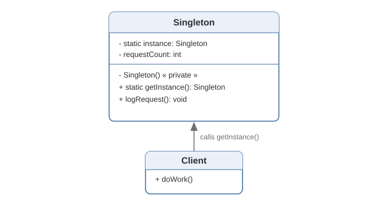
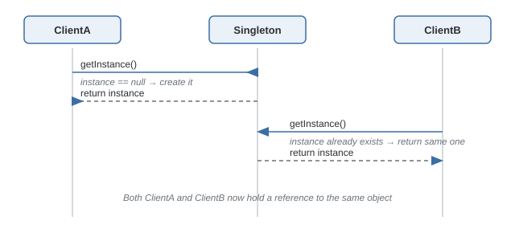

Singleton Pattern
Ensures a class has only one instance, and provides a single global point of access to it.
Theory
The problem, in plain terms
Say you're building a logger. Every part of your app needs to write to the same log file, in the same order, without two threads fighting over the file handle. If every class that needs logging just does new Logger(), you end up with five different Logger objects, each thinking it owns the file — log lines start arriving out of order or getting clobbered. What you actually want is: there's exactly one Logger in the whole process, and everyone talks to that one.
That's the entire idea behind Singleton. It isn't really about restricting object creation for its own sake — it's about resources that genuinely don't make sense to duplicate: a connection pool, a hardware driver, a config loader that read a file once and shouldn't re-read it on every call.
Three moving parts
The constructor is private, so nobody outside the class can call new. A static field holds the one instance ever created. And a static getInstance() hands that instance back — creating it on the first call, returning the same reference every time after. The interesting part is when you create the instance and how you keep that safe under concurrency.
Use double-checked locking with a volatile field for lazy, thread-safe creation — check instance == null outside a lock first (fast path once it's built), then lock and check again before constructing.
Skipping volatile on the instance field. Without it, another thread can observe a partially-constructed object due to instruction reordering — a bug that only shows up under real concurrency, rarely in a quick test.
The variant you get for free
If you're in Python or JavaScript, a module is only evaluated once no matter how many times it's imported — so a plain object sitting at module scope already behaves like a singleton, no metaclass or private-constructor trick required. Worth knowing so you don't over-engineer something the language already gives you.
Where it bites you
The honest downside: Singleton smuggles global state into your program. A class that calls Logger.getInstance() internally has a hidden dependency that doesn't show up in its constructor — you can't tell from the outside what it needs, and you can't swap in a fake one for a test without an awkward workaround. If your codebase already has a DI container (Spring, NestJS, Guice), mark the bean singleton-scoped and let the container own the lifecycle — same guarantee, none of the testing pain.
Diagram


When to Use
- Something must exist exactly once — a connection pool, print spooler, or config read from disk one time.
- The object is expensive to build and there's no reason to pay that cost twice.
- You need one well-known place to coordinate access to a shared resource.
- You care about unit testing this class in isolation — the global instance leaks state between tests.
- A DI container is already in the project — let it manage singleton scope instead.
- Different callers might legitimately need different configurations (that's a factory, not a singleton).
- Multiple threads mutate its state and you haven't nailed down synchronization.
What interviewers are actually listening for: anyone can say "private constructor plus static getInstance." A strong answer also explains why double-checked locking needs volatile, and is willing to say "I'd let Spring manage this instead of writing it by hand" when that's true. Reciting the pattern isn't the point — recognizing when it's the wrong tool is.
Real-World Examples
- Java
Runtime.getRuntime()— oneRuntimeobject per JVM, accessed via a static method. - Logging frameworks (Log4j, SLF4J, Python's
logging) — one shared logger/registry for the whole app. - Spring beans — singleton-scoped by default within the application context.
- Database connection pools (HikariCP) — one pool instance manages reusable connections.
- Browser
windowobject — exactly one globalwindowper tab. - Node.js
require()caching — repeated requires return the same cached module object. - Redux store — a single store instance holds the entire app's state tree.
Interview Questions
Click a question to reveal the answer. These are the ones that actually come up — not just "define Singleton."
What is the Singleton pattern, and what problem does it actually solve?
It guarantees a class has exactly one instance and gives the whole application one place to reach that instance. It matters whenever creating a second instance would cause real problems — two connection pools fighting over the same database, two loggers writing to the same file out of order, or paying twice to load a config file that never changes.
Why does the instance field need to be volatile in double-checked locking?
Without volatile, the JVM is allowed to reorder the instructions inside new Singleton() — allocate memory, then hand back the reference, then run the constructor. Another thread can see a non-null reference before the constructor has actually finished, and start using a half-built object. volatile prevents that reordering and makes the write visible to every thread immediately.
Can you break a Java Singleton using reflection or serialization?
Yes, both are real ways to defeat it. Reflection can call the private constructor directly via setAccessible(true), creating a second instance. Deserializing a Singleton with default readObject() behavior also creates a brand-new object instead of reusing the existing one. Fixes: throw from the constructor if an instance already exists (blocks reflection), and implement readResolve() to return the existing instance instead of the deserialized one.
How would you implement a Singleton in Python without writing a metaclass?
Just use the module itself. Define your state and functions at module level in a file, and import that module wherever you need it — Python caches modules after the first import, so every importer gets the same object. The metaclass version is worth knowing because it enforces the pattern for any class that opts in, but for a one-off shared object, module-level state is simpler and just as safe.
Is Node's require() caching really a Singleton? Any caveats?
Functionally yes — the first require('./thing') evaluates the module and caches the exported object; every later require from anywhere in the app returns that same cached object. The caveats: the cache key is the resolved file path, so requiring the same logical module via two different paths (or two different node_modules copies, common in monorepos) gives you two separate "singletons." Also, ES modules (import) use a different module registry than CommonJS require, so mixing the two module systems can quietly break the single-instance guarantee.
How does Spring's singleton scope differ from the classic Singleton pattern?
The classic pattern enforces "one instance" inside the class itself via a private constructor. Spring's singleton scope enforces it from the outside — the container creates one instance per bean definition per application context and hands that same instance to every class that asks for it via dependency injection. The class itself has a normal public constructor and no idea it's being treated as a singleton, which is exactly why it stays easy to test: in a test context, you can register a different instance (or a mock) without touching the class at all.
Code & Output
Same pattern, four languages. Switch tabs to see the language-specific implementation and its actual captured output below it — every output shown here was captured from a real run, not guessed.
public static Singleton getInstance() {
if (instance == null) {
instance = new Singleton(); // no lock!
}
return instance;
}Two threads can both pass the null check before either finishes constructing, and you end up with two "singletons."
if (instance == null) {
synchronized (Singleton.class) {
if (instance == null) {
instance = new Singleton();
}
}
}The lock only runs on the (rare) first creation — every call after is lock-free.